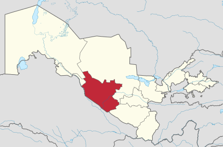

|  |
Buxoro — Oʻzbekiston Respublikasining qadimiy shaharlaridan biri, Buxoro viloyatining maʼmuriy, iqtisodiy va madaniy markazi. O'zbekistonning ilk poytaxti. Buyuk ipаk yoʻlida yirik tijorat markazlaridan boʻlgan. Oʻzbekistonning janubiy-gʻarbida, Zarafshon daryosi quyi oqimida joylashgan. Toshkentdan 616 km. Buxoro 2 ta shahar rayoni (Fayzulla Xoʻjayev va Toʻqimachilik)ga boʻlingan. Aholisi 290000 (2019). Aholisining katta qismini o'zbeklar tashkil etadi. Oliy ta‘lim muassasalari: "Buxoro davlat universiteti", " Buxoro muhandislik-texnologiya instituti".
Nomlanishi va etimologiyasi Buxoro shahri qadim zamonlarda qanday nomlangani — nomaʼlum. Milodiy V asrga oid xitoy manbalarida Buxoro shahri Nyumi tarzida tilga olinib oʻtilgan. Binobarin, shaharda shu nomdagi mulk hukmdorining qarorgohi ham boʻlgan. Tan imperiyasining VII asrga oid solnomalarida Buxoro shahri An (Ango), Ansi, Buxo (Buxe, Fuxo) shakllarida qayd etib oʻtilgan. Keyinchalik shahar har xil nomlana boshladi. Arab qadimiy manbalarda u Bumiskat, Madinat us-sufriya (Mis shahar), Numijkat (soʻgʻdcha numij yoki namich degani mashhur degan maʼnoni anglatgan) tarzida keltirilgan. Qadimiy zamonlarda yashagan mahalliy mualliflarning fikricha, shaharning nomi Buxor, yaʼni "Sanamlar turgan ibodatxona" maʼnosini anglatuvchi bir soʻzdan kelib chiqqan.
Ayrim tadqiqotchilarning faraz qilishlaricha, Buxoro nomi mintaqaning eng asosiy buddaviylik ibodatxonasi vixara yoki ana shu vixaraning sug'diy transkripsiyasi boʻlmish buxoro (ibodatxona) soʻzidan kelib chiqqan. Ammo buddaviylik va moniylik diniy taʼlimotlariga oid osori atiqalar shahar hududida ham, umuman, Buxoro vohasida ham topilgan emas.
Buxoro (Buxara) toponimi ilk bor Soʻgʻd yozuvlari bilan Buxoroda zarb qilingan mis tangalarida tilga olingan (milodiy IV-V asrlar).[2]
Tarixi Buxoro shahri sharqning mashhur qadimiy shaharlaridan biri. Arxeologik maʼlumotlarga koʻra, Buxoroga miloddan avval VI asrda asos solingan.[3] Zarafshon daryosining quyi oqimida joylashgan Buxoro shahri va uning atrofidagi yerlar qadimda nihoyatda xushmanzara — hayvonot va oʻsimlik dunyosi betakror, koʻl va oqar suvlarga boy boʻlib, tarixchi Narshaxiyning „Buxoro tarixi“ asaridagi maʼlumotlar buni tasdiqlaydi.
Shahar yoshi aniqlashga doir tadqiqotlar Shuningdek, shaharning yoshini aniqlash maqsadida butun Buxoro vohasi boʻylab, chunonchi yirik arxeologik yodgorliklar — Poykend, Qoʻrgʻoni Vardonze, Romitan, Varaxsha, Xoja Boʻston, Qoʻzimontepa, Oqsochtepa va boshqa shahar harobalarida keng arxeologik qazishmalar olib borildi. Arxeologik tadqiqotlar jarayonida Buxoro xususidagi yozma manbalarda keltirilgan maʼlumotlar bilan arxeologik topilmalar qiyoslanib, quyidagicha xulosaga kelindi. Zarafshon daryosining quyi oqimidagi dastlabki manzilgohlar jyoz davri (miloddan avvalgi 2-ming yillikning 2-yarmi) dayoq vujudga kelib, ular sinchli yarim yertoʻlalardan iborat boʻlgan (qurib qolgan Mohondaryo tarmogʻi mintaqasida olib borilgan tadqiqotlar buni tasdiqlaydi); miloddan avvalgi 6—5-asrlarda Zarafshon daryosining yirik tarmogilari deltalari joylashgan yerlarda mustahkamlanmagan manzilgoxlar paydo boʻlgan. Miloddan avvalgi 4-asrda esa Buxoro arki qurilajak hudud baland mudofaa devori va keng xandaq bilan oʻrab olinib, uning etagida uchta mustahkamlangan manzilgoh joylashgan (bu xil manzilgohlar miloddan avvalgi 1-ming yillik boshidan Oʻrta Osiyoning dehqonchilik qilinadigan viloyatlariga xosdir). Mazkur manzilgohlardan biri Firobdiz, ikkinchisi Navmichkat, uchinchisi Buxoro deb atalgan. Keyinchalik bu uch manzilgoh oʻzaro birlashib va toʻxtovsiz taraqqiy etib borib, kattagina shaharga — Buxoro vohasining savdohunarmandchilik va maʼmuriy markaziga aylangan.
Qadimgi davr va Ilk oʻrta asrlar X asr tarixchisi Muhammad Narshaxiyning "Buxoro tarixi" asarida oʻz aksini topgan mahalliy mifologik anʼanalar shaharning qadimiy qismi — Ark qalʼasiga asos solinishi qahramonlik eposlari bahodirlari Siyovush yoki Afrosiyob, yaʼni Alp Er Toʻngaga bogʻlab, shu tariqa olis-olis zamonlarga mansub tarzda rivoyat qilinadi. Biroq, vohadagi Vardonze, Romitan, Varaxsha kabi istehkomlar va Poykenddek bir tijorat shahri — Buxoro shahridan ham qadimiyroq, deb hisoblab kelinadi.
Buxoro vohasidagi hukmdorlardan biri — Asbar tangasi. VI—VII asr boshi. Buxorodan topilgan tangalar bu yerda savdo-tijorat aloqalari va tovar-pul munosabatlari taraqqiy etganidan guvohlik beradi. Tangalarga qarab, bu yerda hukm surgan sulolalar almashinuvi, hukmdorlar ismlari, unvon-martabalar nomlanishi, sulola alomatlari — tamgʻa va boshqa tasvirlari oʻzgarib borishini aniq-tiniq kuzatish mumkin. Biroq shahar hududida Salavkiylar hukmdori Yevtidemning dirhamlariga taqlidan zarb etilgan xazina 1937-yili topilgan xolos.